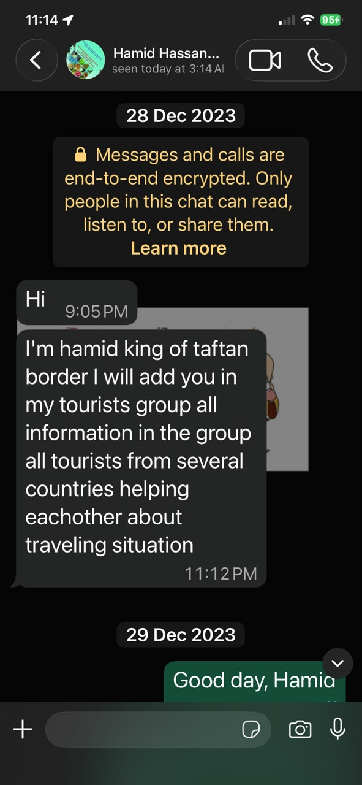

Real Story · 中文
进入 Iran，不是 traveller 自己消失在边境。
因为 language barrier、sanctions、SIM card 限制和边境地区的不确定性， 很多 overlanders 在进入 Iran 的第一天都会需要 practical help。
在 Taftan / Iran side，En. Hamid Hassan 会协助 overlanders。 他会给每位 traveller 一个 assigned SIM card，通常先有一天 validity， 之后 travellers 可以自己 top up。 他也会通过 WhatsApp 联系大家，并把 overlanders 加入 tourists group， 让不同国家的 travellers 可以互相知道路况、手续、住宿和安全情况。
对我来说，这一点很重要。 这不是普通 tourist service 而已，而是 Iran side 对进入的 overlanders 的一种 protection layer。 从 Pakistan Levies Center，到 Iran customs，再到 Zahedan 和 Mr. Abdullah 的 house， 这条路不是靠我一个人硬闯，而是有不同层次的人在接力照看。


YouTube Record
Border crossing from Pakistan to Iran.
Tuzi documented the border crossing procedure in a video record: from the Pakistan Levies Center, through Iran customs, and onward toward Zahedan and Mr. Abdullah’s house. The video was made to show the actual process clearly, not to encourage unsafe repetition.
English Summary
A support layer for overlanders.
Because of language barriers, sanctions, SIM-card limitations, and border uncertainty, overlanders entering Iran needed practical support. En. Hamid Hassan helped travellers by assigning a SIM card, contacting them through WhatsApp, and adding them into a tourist information group.
This field note records how Iran’s entry process included a protective human network. For Tuzi, this meant the journey from Pakistan into Iran was not simply an isolated crossing, but a chain of guidance: Pakistan levies, Iran customs, tourist support, WhatsApp group, and local hosts in Zahedan.
Heart Statement
有些安全，不是写在 road sign 上，而是写在人与人的接力里。
The border did not become safe because it was simple. It became passable because people stayed connected.